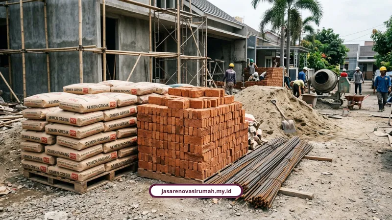

Biaya renovasi rumah Surabaya per m2 di 2026 berkisar Rp1,8 juta untuk renovasi ringan sampai Rp6 juta untuk renovasi berat, tergantung skala pekerjaan. Kami rangkum simulasi RAB lengkapnya supaya anggaran Anda tidak meleset.
Menghitung biaya per meter persegi itu penting supaya Anda tidak kaget di tengah proyek. Surabaya juga punya tantangan tersendiri, seperti kondisi tanah lembek di beberapa titik Surabaya Barat dan Timur, serta suhu dan kelembapan tinggi yang bisa bikin dinding cepat retak kalau spesifikasi materialnya asal.
Akses jalan yang sempit di kawasan padat seperti Surabaya Pusat dan Selatan juga memengaruhi ongkos logistik material. Karena itu, patokan biaya per m2 membantu Anda menyiapkan dana yang realistis sejak awal.
Kenapa Biaya Renovasi di Surabaya Perlu Dihitung Per M2?
Menghitung biaya per meter persegi itu penting supaya Anda tidak kaget di tengah proyek. Surabaya juga punya tantangan tersendiri, seperti kondisi tanah lembek di beberapa titik Surabaya Barat dan Timur, serta suhu dan kelembapan tinggi yang bisa bikin dinding cepat retak kalau spesifikasi materialnya asal.
Akses jalan yang sempit di kawasan padat seperti Surabaya Pusat dan Selatan juga memengaruhi ongkos logistik material. Karena itu, patokan biaya per m2 membantu Anda menyiapkan dana yang realistis sejak awal.
Berapa Kisaran Biaya Renovasi Rumah Surabaya per M2?
Berikut kisaran biaya renovasi rumah di Surabaya berdasarkan skala pekerjaan:
- Renovasi ringan: Rp1.800.000 sampai Rp2.500.000 per m2 untuk finishing seperti pengecatan, ganti keramik sebagian, dan perbaikan plafon. Kalau hanya borongan jasa tukang, kisarannya Rp80.000 sampai Rp150.000 per m2.
- Renovasi sedang: Rp2.500.000 sampai Rp3.500.000 per m2 untuk perubahan tata ruang, perbaikan atap, upgrade instalasi listrik dan plumbing, serta penggantian kusen. Borongan tenaga saja Rp200.000 sampai Rp350.000 per m2.
- Renovasi berat/total: Rp3.500.000 sampai Rp5.000.000 per m2, bisa mencapai Rp6.000.000 per m2 untuk skala besar, mencakup bongkar total, perkuatan struktur, dan penambahan lantai.
Kalau Anda ingin tahu lebih dulu kenapa kami layak dipercaya menangani proyek ini, kami sudah membahasnya di jasa kontraktor renovasi Surabaya dengan sistem desain dan pelaksanaan bergaransi.
Berapa Rincian Biaya per Jenis Pekerjaan?
Supaya lebih konkret, berikut rincian harga per jenis pekerjaan yang sering muncul dalam RAB renovasi:
- Bongkar rangka kayu Rp27.000 per m2, bongkar genting Rp37.000 per m2, bongkar plafon lama Rp17.000 sampai Rp60.000 per m2.
- Pasang atap galvalum/baja ringan standar SNI (usuk C80/0,75mm, reng 0,45mm) Rp215.000 per m2 termasuk material dan jasa.
- Waterproofing dak beton/atap Rp80.000 sampai Rp200.000 per m2.
- Keramik standar 30x30/40x40 Rp120.000 sampai Rp220.000 per m2, granit/homogeneous tile Rp280.000 sampai Rp550.000 per m2.
- Pengecatan interior Rp35.000 sampai Rp65.000 per m2, eksterior weathershield Rp45.000 sampai Rp80.000 per m2.
- Plester dan aci dinding baru Rp80.000 sampai Rp150.000 per m2.
- Renovasi kamar mandi standar lengkap Rp8.000.000 sampai Rp20.000.000 per unit.
- Kitchen set HPL Rp1.500.000 sampai Rp4.500.000 per meter lari, Duco Rp4.000.000 sampai Rp7.000.000 per meter lari.
- Jasa desain interior saja Rp150.000 sampai Rp750.000 per m2, skema Desain + Build Rp3.500.000 sampai Rp10.000.000 per m2.
Bagaimana Simulasi RAB Renovasi Rumah 100 M2?
Untuk rumah seluas 100 m2 dengan renovasi sedang di angka Rp3.000.000 per m2, total anggaran sekitar Rp300 juta, dengan alokasi kira-kira:
- Pembongkaran: Rp20 juta.
- Struktur dan pasangan dinding: Rp110 juta.
- Atap dan plafon: Rp40 juta.
- Listrik dan plumbing: Rp25 juta.
- Finishing dan cat: Rp60 juta.
- Manajemen proyek: Rp45 juta.
Kalau rencananya menambah lantai pada rumah tipe 36 menjadi 2 lantai dengan total bangunan baru 72 m2, memakai acuan rata-rata Rp4.500.000 per m2, estimasi totalnya sekitar Rp324 juta.
Alokasinya kira-kira 5 persen untuk pembongkaran dan persiapan, 45 persen untuk struktur lantai 1 dan 2, 20 persen untuk arsitektur dinding/atap, dan 30 persen untuk finishing serta MEP.
Ilham Budhiman, penulis dan pengamat properti dari 99 Group/Rumah123, menekankan pentingnya menyusun RAB berdasarkan Analisa Harga Satuan Pekerjaan yang mengacu pada Permen PUPR No. 8 Tahun 2023, serta menyiapkan dana cadangan 10 sampai 15 persen dari total anggaran untuk biaya tak terduga.

Apa Saja Tantangan Teknis Renovasi Rumah di Surabaya?
Beberapa hal teknis yang sebaiknya diperhitungkan sebelum mulai renovasi:
- Kondisi tanah lembek di area tertentu bisa memengaruhi kebutuhan pondasi.
- Cuaca panas dan lembap ekstrim berisiko membuat dinding cepat retak atau cat mengelupas kalau material tidak sesuai spesifikasi.
- Renovasi yang mengubah struktur utama atau menambah lantai wajib mengurus Persetujuan Bangunan Gedung (PBG) lewat portal resmi SIMBG.
- Waktu proyek idealnya dilakukan saat musim kemarau supaya proses pengeringan semen, pengecoran, dan pengecatan berlangsung optimal.
Alfiansyah dari Sibambo Studio menjelaskan bahwa pembuatan gambar kerja detail sangat vital untuk mencegah deviasi hasil di lapangan yang bisa mencapai 15 sampai 25 persen dari rencana awal.
Cost Estimator ASA Builder juga mengingatkan bahwa renovasi total atau menambah lantai pada rumah tipe 36 membutuhkan perhitungan cermat pada struktur pondasi dan kolom eksisting.
Kenapa Sebaiknya Pakai Jasa yang RAB-nya Transparan?
Kami menyusun RAB berdasarkan rincian material dan volume yang jelas, jadi Anda tahu persis ke mana uangnya mengalir. Ini beberapa nilai yang kami pegang:
- Pengalaman lebih dari 12 tahun dengan 150+ proyek renovasi dan konstruksi di seluruh Indonesia.
- Tingkat kepuasan klien 98 persen didukung 25+ tim profesional.
- Garansi pekerjaan/struktur resmi tanpa biaya tersembunyi.
- Survei lokasi dan konsultasi gratis sebelum Anda berkomitmen anggaran.
Ibu Sinta dari Surabaya, salah satu klien kami, menyampaikan bahwa tim arsitek kami memberi banyak masukan desain yang membuat rumahnya terasa jauh lebih luas dan nyaman.
Kalau Anda ingin tahu bagaimana alur kerja kami dari survei sampai serah terima, kami sudah menuliskannya lengkap di tahapan proses kerja renovasi rumah yang kami terapkan di Surabaya.
Kesimpulan
Biaya renovasi rumah di Surabaya sangat bervariasi tergantung skala pekerjaan, mulai dari renovasi ringan sampai penambahan lantai penuh. Yang penting bukan cuma tahu angkanya, tapi juga menyiapkan dana cadangan dan memilih mitra kerja yang RAB-nya transparan sejak awal.
Kami siap membantu menyusun RAB yang sesuai kebutuhan dan anggaran Anda. Hubungi kami via WhatsApp 0889-8964-3555, email info@jasarenovasirumah.my.id, atau kunjungi halaman layanan kami di https://jasarenovasirumah.my.id/layanan/ untuk konsultasi dan survei gratis.
FAQ Seputar Biaya Renovasi Rumah Surabaya

Naura Regyna Putri
Penulis Profesional & Praktisi Konstruksi
Naura Regyna Putri adalah seorang penulis profesional yang memiliki ketertarikan mendalam pada dunia arsitektur dan konstruksi. Dengan pengalaman bertahun-tahun mengamati tren renovasi rumah, ia aktif membagikan panduan praktis, tips RAB, dan wawasan seputar material bangunan untuk membantu pemilik rumah mewujudkan hunian impian mereka dengan anggaran yang efisien.